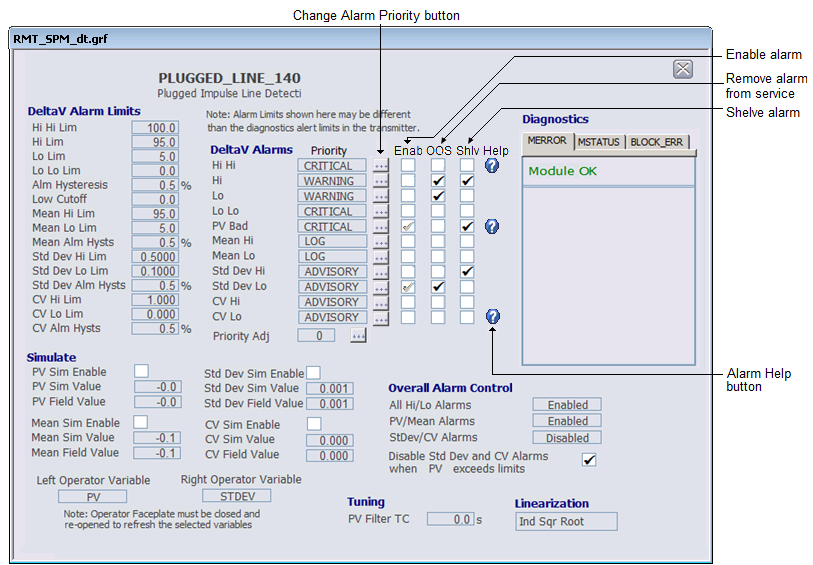

JavaScript must be enabled in order to use this site.Please enable JavaScript in your browser and refresh the page. Rosemount Statistical Process Monitoring detail display (RMT_SPM_DT) DeltaV Operate View of the SPM module detail display (RMT_SPM_dt)  The Statistical Process Monitoring detail display provides you with access to modify alarm configuration and simulation. Subtopics: Limits (RMT_SPM_DT) Alarms (RMT_SPM_DT) Diagnostics (RMT_SPM_DT) Simulate (RMT_SPM_DT) Overall Alarm Control (RMT_SPM_DT) Tuning (RMT_SPM_DT) Linearization (RMT_SPM_DT)